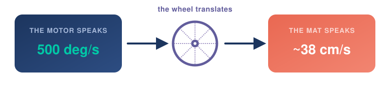
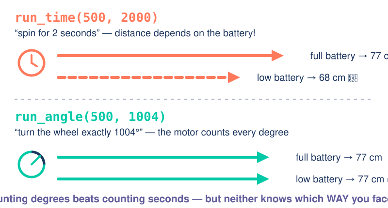
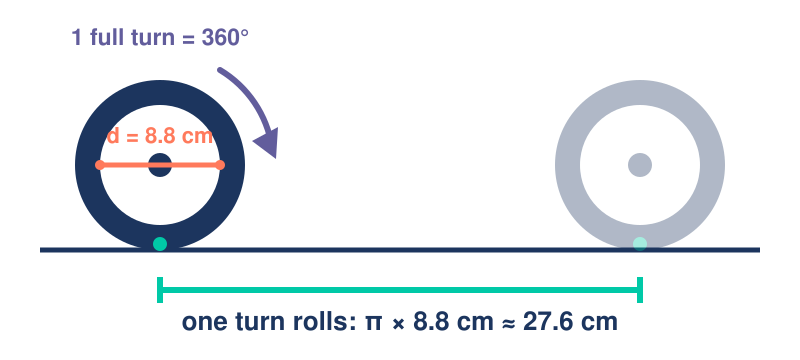

Make It Move
Day 2 · Robot Rockstars · SPIKE Prime + Pybricks
2026-07-16
A. Warm-Up
Finish the builds — every robot passes the four checks.
Before we code
- 🏗️ Build catch-up — didn’t finish yesterday? Finish now, no penalty.
- ✅ Re-run the four checks: click · twin · shake · roll.
- 🔋 Battery light green-ish? You’ll see why that matters today.
⏱️ Time: 20 minutes
B. The Human Robot
Break it → feel it → fix it. Starting with no laptops at all.
Unplugged: drive a blindfolded partner
The game
One of you is the programmer; your blindfolded partner is the robot. Only discrete commands — “forward 30 cm,” “turn 90° right.” No steering, no touching. Get your robot across the mat to the target.
- Give the commands. Watch where your “robot” actually ends up.
- Swap roles and run it again.
⏱️ Time: 15 minutes
What just went wrong?
You commanded
- forward 30 cm
- turn 90°
- forward 30 cm
The robot did
- forward ~34 cm
- turn ~80°
- forward 30 cm… into the wrong spot
That gap is open-loop drift — moving without checking the result. Hold that thought: your LEGO robot is about to do exactly the same thing.
C. What IS Speed?
Two cars. One race. You already know the answer — now say it like a scientist.
🏁 The race
Same start. Same 3 seconds. What did you notice?
…and how much faster is 🚗?
“A lot” is not a measurement.
Say it with numbers
🚗 Car A: 6 m in 3 s
→ 6 ÷ 3 = 2 m every second
🚙 Car B: 3 m in 3 s
→ 3 ÷ 3 = 1 m every second
speed = distance ÷ time — how far you get, per second. That’s the whole formula. You invented it.
D. The First Program
Import, name the motors, spin the wheels.
Make it move LAB
from pybricks.hubs import PrimeHub
from pybricks.pupdevices import Motor
from pybricks.parameters import Port, Direction
from pybricks.tools import wait
hub = PrimeHub()
left = Motor(Port.A, Direction.COUNTERCLOCKWISE)
right = Motor(Port.E)
left.run_time(500, 2000, wait=False)
right.run_time(500, 2000)Game Day 🎮
Yesterday you made it move. Today you make it obey — with the one tool you already own: run_time.
🐛 Bug hunt
This program crashes before the robot twitches. Find the crime.
NameError: name 'Motor' is not defined — we never imported Motor. Python only knows the tools you pull in: from pybricks.pupdevices import Motor.
🐛 Bug hunt
The imports are perfect… and it still crashes. Why?
OSError — the code says Port B, but the right motor is plugged into Port E. The program must match the physical robot. Check the cable, then check the letter.
🥌 Game 1: Robot Curling
The rules
Tape three zones on the floor: 10 pts · 25 pts · 50 pts bullseye. Start behind the line, run your program, hands off. Robot must stop fully inside a zone — slide past the last zone and it’s 0. You may change only one number: the 2000. 3 throws, best one counts.
Throw 1 lands short, throw 2 with the same number lands somewhere else?! Keep your score sheet — that wobble is evidence, and we’ll need it later today. 🕵️
⏱️ Time: 15 minutes
🅿️ Bonus round: The Price Is Right
The rules
Park your robot’s nose as close to the wall as you can without touching it. Touch = 0. Judge measures the gap with a ruler — smallest gap wins.
- Same law as curling: tune the time, nothing else.
- Pro tip: sneak up in two runs? Not allowed — one program, one shot. 😏
⏱️ Time: 10 minutes — if the curling podium is settled
Break
Quick quiz 🚨
run_time(500, 2000) — you just defined speed… so 500 is a speed of what? And the 2000?
Centimeters per second? Meters? Robot points? Guess!
2000 = milliseconds — how long it runs. 500 = degrees per second. It is a speed — something ÷ time — but the something isn’t distance… 🤔
⚙️ Motors have a speed too
No road, no distance — so count what a motor does: turns. Spin speed = rotations ÷ time. Same recipe, new ingredient.
🧭 What about half a rotation? A quarter?
0, 30, 60, 90 … 360 — ancient sky-watchers sliced a full circle into 360 equal steps called degrees. The idea comes from the Babylonians (~2000 BCE), who loved multiples of 60. The Greeks inherited and spread it, and we are still using it today! 🏛️
Name your numbers — variables
Name a number once → change it in one place → every move retunes. First habit of clean robot code.
E. The Wheel Is a Translator
The mat speaks cm. The motor speaks degrees. Someone has to translate.
🎯 Mission: drive exactly 100 cm
Your robot only listens to deg/s and ms. How do you order it to travel 100 cm?
Think: what’s the only part of the robot that actually touches the mat?
The wheel 🛞 — every degree the motor turns becomes distance on the ground. Let’s see exactly how much.
🛞 Unroll the wheel
From deg/s to cm/s

The Translation
Since 1 full rotation is 360° = 27.6 cm: \[360\text{ deg/s} = 27.6\text{ cm/s}\]
To convert any speed, we scale it: \[\text{Speed (cm/s)} = \text{Speed (deg/s)} \times \frac{27.6}{360}\]
Practical Example 🧮
For DRIVE_SPEED = 500:
\(500 \times \frac{27.6}{360} \approx 38.3\text{ cm/s}\)
Let’s check that claim!
🔬 Speed lab — measure YOUR robot
- Put tape at the front wheels. Run the program:
DRIVE_SPEED = 500,DRIVE_TIME = 2000. - Measure the distance with a ruler. Write it down.
- Compute: speed = distance ÷ 2 seconds. Math predicted ~38 cm/s → ~77 cm.
Got less than 77? And your neighbor got a different number — same code?! (Hint: check both battery lights. 🔋) Commanding is not the same as getting.
⏱️ Time: 15 minutes
So… exactly 100 cm?
At ~38 cm/s: time = 100 ÷ 38 ≈ 2.6 s. Set DRIVE_TIME = 2600. Run it. Measure it.
Did anyone land on 100 cm?
Short again — and different every run. Timed driving trusts the battery to keep its promise. There has to be a better way…
⏱️ Time: 10 minutes
F. Count Degrees, Not Seconds
run_angle — the motor counts every degree for you.
run_time vs run_angle

🎯 Predict-a-distance
You want exactly 100 cm. One wheel turn (360°) ≈ 27.6 cm. How many degrees?
🧮 Direct Conversion
- Degrees per 1 cm: \(1\text{ cm} = \frac{360^\circ}{27.6\text{ cm}} \approx 13.04^\circ/\text{cm}\)
- For 100 cm: \(\text{degrees} = 100\text{ cm} \times 13.04^\circ/\text{cm} \approx \mathbf{1304^\circ}\)
🤖 Try It Out
⏱️ Time: 10 minutes
G. Where Does 27.6 Come From?
Wheels don’t advertise their rope — they advertise their diameter.
Diameter → circumference

circumference = π × diameter. Your wheel: 3.14 × 8.8 cm ≈ 27.6 cm. Any wheel on Earth: read the diameter off the tire, multiply by π, and you speak its language.
🧪 Bonus: discover π yourself
- Wrap a string around anything round — cup, tape roll, bottle, your wheel. That’s C.
- Measure straight across the middle. That’s d.
- Divide: C ÷ d = ?
≈ 3.14. Every. Single. Time. That number is π — the circle’s built-in constant. You didn’t memorize it; you discovered it.
🧪 Bonus: another way to measure a circle
No string? Catch the circle with straight lines instead.
perimeter = 4 × side
→ circle's rope is less than 4
→ circle's rope is more than 2.83
2.83 < π < 4 — trapped, no string needed! A rough trap, though… how do we squeeze tighter? More sides →
🧪 Bonus: Archimedes’ squeeze
Archimedes (Syracuse, ~250 BCE) did exactly this by hand — doubling up to 96 sides — and proved 3 10/71 < π < 3 1/7. He squeezed π out of a circle 2,200 years before calculators. 🏛️
H. Competition & Gate
Today’s showdown: Radar Gun 🔫
Radar Gun 📡
The challenge
Predict, then prove. Measure your robot’s speed, then tell the judge exactly how many seconds it needs to cross the 1.5 m finish line. Judge starts the stopwatch — closest prediction wins. 3 attempts, best counts.
- Pure science: measure → calculate → predict → test.
- Pro move: does your prediction survive a battery swap? 😏
Today’s gate
You’re done today when…
Your robot moves with named variables, you can convert deg/s → cm/s for your wheel, and you can explain why counted degrees beat timed seconds.
Next: Drive a Square — meet the gyro, a hidden sense you’ll feel with your own hands, and watch it snap tomorrow’s open-loop square shut.
Tonight’s mission 🎬
You made it move. You measured it like a scientist.
Optional at home: WRO-Learn — Fundamentals of Mechanics (short videos — pure enrichment; everything you need is delivered in class).